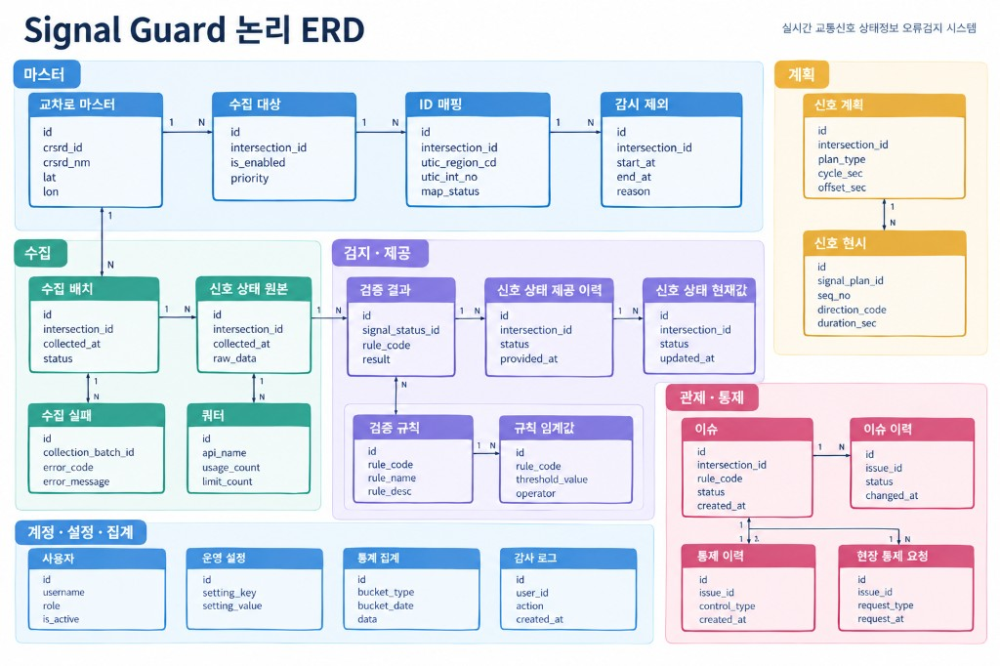

Design · 시스템 아키텍처
논리 구성도

Week 4 · Weekly Report
실시간 교통신호 상태정보
오류검지 시스템
조찬희 · 기경현
웹 프레임워크 (조규철 교수님)
WEEK 4 · WEEKLY REPORT
Analysis · 요구사항정의서
한 ID에 검증 가능한 요구 하나.
역할, 조건, 초·건수 같은 숫자를 적는다.
모든 요구에 수용 기준. 통과/실패를 가릴 수 있어야 한다.
RFP ID 또는 팀 확장(EXT)과 연결한다.
무엇을만 적고, 스택은 설계로.
MVP 포함과 제외를 명시해 오해를 막는다.
Analysis · 요구사항정의서
같은 시각·교차로·방향에서 대조한다.
누락·급변·순서 위반을 판정한다.
원본을 바꾸지 않는다.
대시보드에서 등급·지연·이슈를 본다.
이슈를 확인하고 코멘트한다.
값을 고치는 권한은 없다.
찾은 오류를 닫는 단계다.
정보 / 계획 / 현장 요청 세 갈래.
현장 요청은 기록만. 신호기 명령 없음.
Analysis · 제안요청서 요구사항 대응표
| 구분 | 의미 | 판정 |
|---|---|---|
| 구현 7건 | 소프트웨어로 충족 | 테스트로 통과/실패 |
| 부분 구현 17건 | 규모·환경을 수업으로 축소 | 인천 표본, 공개 API |
| 문서 대체 15건 | 발주 행정·센터 전용 | 구현 대상 아님 |
구현 + 부분 구현 = 24건. 기능 5건은 구현 또는 부분 구현.
바꾸지 않음: 원본 불변, 검지→관제→통제, 실제어 제외.
바꾸는 것: 전국·센터망을 인천 표본·Open API로.
구현할 것 / 축소할 것 / 문서만 남길 것을 같은 기준으로 이해합니다. 요구사항 ID와 산출물이 어긋나면 이 표부터 고칩니다.
Analysis · 유스케이스 · 사용자 스토리
누가 어떤 목표를 어떤 순서로 달성하는지입니다.
| UC | 주 액터 | 목표 |
|---|---|---|
| UC01–05 | 시스템 | 수집 · 계획 적재 · 검지 · 자동 보정 · 이슈 등록 |
| UC06 | 운영자·관리자 | 대시보드에서 상태와 오류를 본다 |
| UC07 | 관리자 | 정보·계획 통제 또는 현장 요청 후 재검증 |
| UC08 | 운영자·관리자 | 통계를 조회하고 CSV로 보낸다 |
| UC09–10 | 관리자 | 계정·권한, 수집 대상·주기·임계값 |
| UC11 | 시스템·사람 | 통제 이력을 남기고 원본과 제공값을 나눠 본다 |
사용자 스토리 33건 (필수 29 · 중요 2 · 선택 2). 운영자는 조회·코멘트만, 관리자만 통제합니다.
Analysis · 제품 백로그 · WBS
스토리 문구는 유스케이스 문서가 정본이고, 이 문서는 배치·용량·작업 패키지만 고정합니다.
필수 스토리 29건 = 96 스토리 포인트. 구현 6주 × 주당 16과 같습니다.
중요·선택(UTIC 수집, 지도, 웹소켓)은 버퍼에만 넣습니다.
완료의 정의에 ‘원본 수신을 덮어쓰는 경로가 없다’를 넣었습니다.
자르지 않는 것: 수집, 규칙 엔진, 자동보정/이슈, 대시보드, 세 갈래 통제, 로그인, 쿼터.
분석 1–3주 S0 — 산출물 5종. M1 통과.
설계 4–5주 S-D1, S-D2 — 지금 여기.
구현 6–11주 S1–S6 — 11주 말 기능 동결(M5).
테스트 12–13주 — 필수 테스트 100%. 안정화 14–15주 — 매뉴얼·시연.
조찬희는 화면·일정, 기경현은 수집·엔진·DB. 스토리에 FE/BE가 같이 있으면 둘 다 Done이어야 합니다.
Design · Week 4
분석이 ‘무엇을’이면 설계는 ‘어떻게 나눌지’입니다. 이번 주는 논리 구조와 화면·데이터·API의 0.1을 고정했습니다.
| 산출물 | WBS | 이번에 고정한 내용 | 주 담당 |
|---|---|---|---|
| 시스템 아키텍처 | WBS-3.1 | 5계층 구성, 컴포넌트, 원본/제공 분리, 용량 산정식 | 공동 |
| 화면 IA · 와이어 | WBS-3.3 | 필수 6화면, 메뉴·권한, 이슈 상세의 통제 패널 | 조찬희 |
| 논리 ERD | WBS-3.4 | 23개 엔터티, 원본 append-only, 명명·무결성 | 기경현 |
| REST API 명세 | WBS-3.5 | /api/v1 경로, RBAC, 원본 수정 API 없음 | 기경현 |
Design · 시스템 아키텍처
운영자·관리자 브라우저. 외부 API 키를 두지 않고 REST만 호출합니다.
인증, 수집·정규화, 검지 엔진, 이슈·통제 API. 요청 경로와 배치 경로를 분리합니다.
원본·제공·계획·이슈·이력을 같은 PostgreSQL 안의 다른 테이블로 둡니다.
실시간 신호 API, UTIC(또는 대체). 현장 신호제어기는 계층에 없습니다.
수신 → 정규화 → 원본 저장 → 검증 → 자동보정 또는 이슈 → 제공.
Design · 시스템 아키텍처
Design · 화면 IA
로그인 직후 운영 규모가 보이고, 이상 교차로 → 상세 → 이슈 → 통제가 이어집니다.
오류 수 · 지연 · 자동보정 · 미처리 이슈
현재 신호와 계획, 원본과 제공을 나란히
목록과 상세. 관리자 통제 패널은 여기
TOD·현시 조회. 관리자만 수정·재검증
유형·교차로·기간 집계, CSV
Design · 논리 ERD

Design · REST API
브라우저는 공공 실시간 API나 UTIC를 직접 치지 않습니다. 외부 연동은 서버 워커 몫입니다.
| 영역 | 예 | 권한 |
|---|---|---|
| 인증·헬스 | POST /auth/login, GET /health | 로그인은 공개, 나머지는 인증 |
| 관제 | GET /dashboard/summary, /intersections/{id}, /issues | 운영자·관리자 |
| 통제 | 정보 통제·제공 차단·현장 요청·계획 PUT | 관리자만. 운영자 403 |
| 설정 | 수집 대상, 규칙 임계값, 계정 CRUD, 쿼터 | 관리자만 |
Next · Week 5 · S-D2
| 할 일 | 산출 | 담당 | 왜 지금인가 |
|---|---|---|---|
| 검증 규칙 명세 | R01–R12 입출력·임계 기본값 | 기경현 | 엔진 구현 전에 숫자와 분기를 고정 |
| 클릭 프로토타입 | 대시보드·이슈·교차로 상세 3화면 | 조찬희 | UC06·UC07 흐름을 구현 전에 검증 |
| 스택·표본·주기 확정 | 아키텍처 0.2, 용량 표 | 공동 | S1 환경 구축의 입력 |
| UTIC 대체 방식 | 시드/CSV/추정 우선순위 | 공동 | 계획 대조가 승인 없이도 돌아가게 |
| 설계 리뷰 | 미결 1–6 닫기, M2 체크 | 공동 | 구현 착수 게이트 |
Next · Deliverables
각 규칙의 입력, 정상/경계/오류 예, 자동보정 vs 이슈 분기, 임계 기본값. 구현 S3–S4의 테스트 헤더가 됩니다.
필수 3화면을 클릭해 관제 루프를 따라갑니다. 화면 ID는 SCR-DASH, SCR-INT-DETAIL, SCR-ISS입니다.
스택, N×T, 계획 대체, 푸시/지도, 임계값을 결정으로 남깁니다. 아키텍처를 0.2로 올립니다.
ERD·API·규칙·화면이 저장소에 있고 팀이 같은 결정을 말할 수 있어야 6주 S1(기동·로그인)을 엽니다.
Q & A
분석은 질문을 고정했고,
설계는 구조를 나누기 시작했습니다.
조찬희 · 기경현